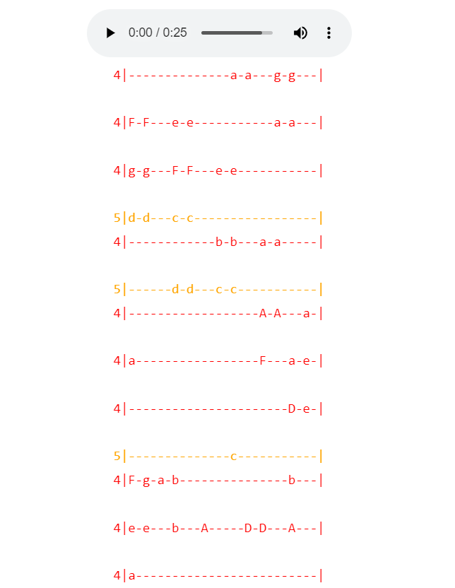
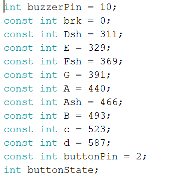
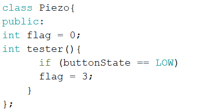
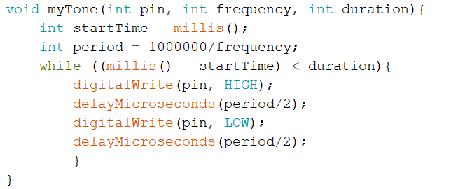

This week our assignment was to create a contraption using an electronic output device we had not used before. To start with, I decided to work on the LED strip but after burning and cutting my finger, I switched to the piezo buzzer
I had a few good ideas for songs but a lot of other people had similar ideas, since I wanted to be unique, I found the sheet music for a song online at https://pianoletternotes.blogspot.com/2019/02/wii-shop-channel-music.html
The song I decided on was the wii shop theme song, it was a song that made my childhood as I used to play on the wii and I still like this song to this day, it has a happy melody
I also followed the assignments parameters by using classes to code in a button
I started coding by creating constant variables for each and every note I needed just like so
I used the myTone function from the professor as it had been advised to use since the tone() function did not work 100% of the time
After a lot of testing and debugging, I ended up with the wii shop theme song coded with 4th and 5th octave notes
I also connected my project to the ossiloscope as instructed and from the following data points I determined that my output device did not operate on a fixed clock but it did operate at 140 bpm but it was not constant, the highest speed was 826.485 and it ranged from this frequency to 1.01797